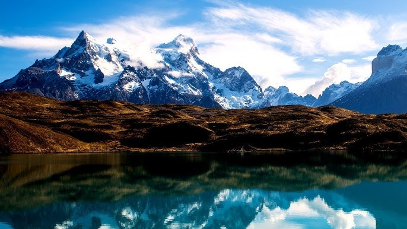
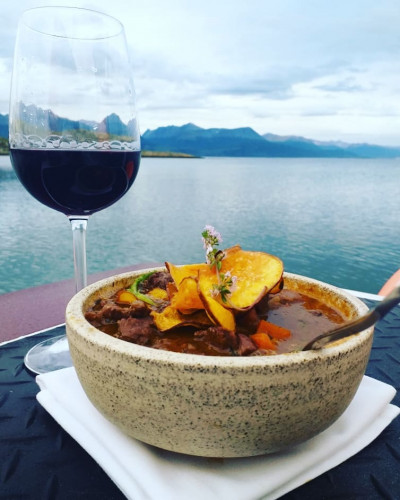
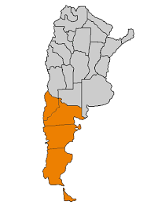

Receta de Cazuela de Cordero

Ingredientes
- 1 pierna de cordero
- 1 zanahoria
- 1 morron
- 2 cebolla
- 500ml de caldo de cordero
- 3 batatas
- condimentos como aceite, sal, pimienta y aji molido ahumado
Preparacion
- deshuesar la pata de cordero y cortar la carne en cubos (no tires el hueso; usalo para preparar el caldo, así le das más sabor a la preparación).
- Mientras sellás la carne, cortar las verduras y agregarlas a la preparación. Primero la zanahoria, luego la cebolla, el ajo y los pimientos
- Cocinar por un tiempo, agregar los condimentos y luego el caldo.
- Mientras toma temperatura, cortar las batatas lo más finitas posibles en forma de chip y freírlas.
- Antes de servir,agregar los chip de batatas, que serán la parte crocante y la decoración.
- Y por ultimo a disfrutar

Video de ayuda para guiarte en hacer la Cazuela de Cordero
Mapa de la Patagonia Argentina, de donde viene la receta
